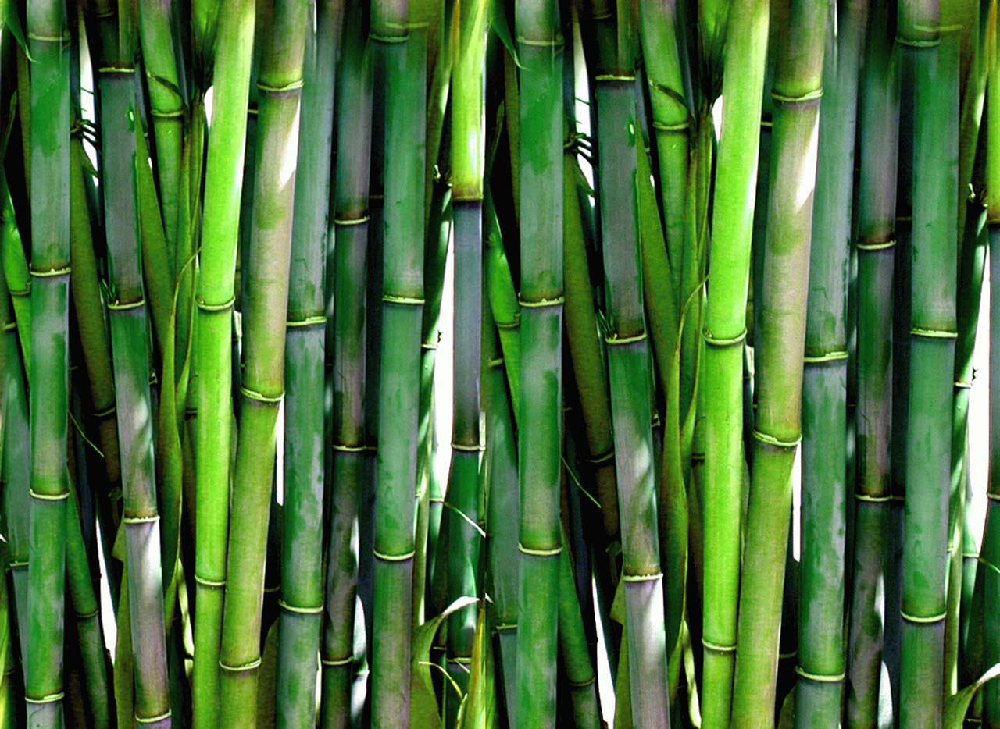
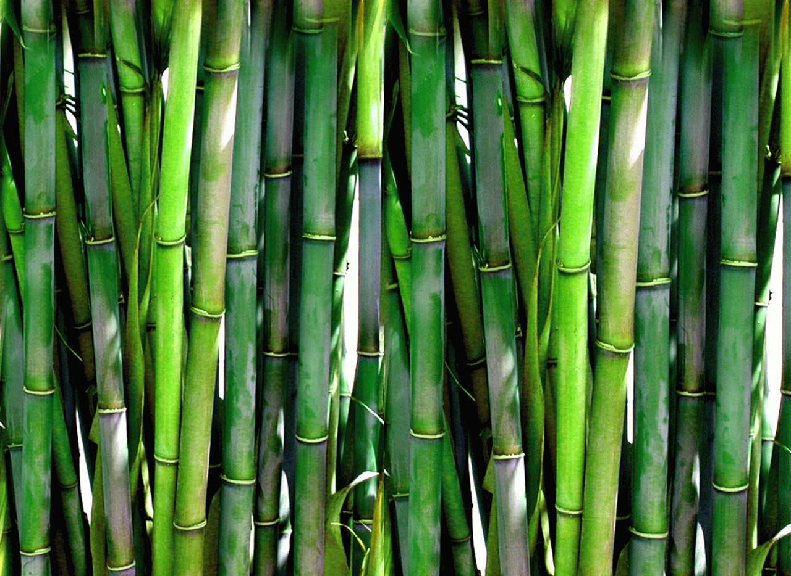
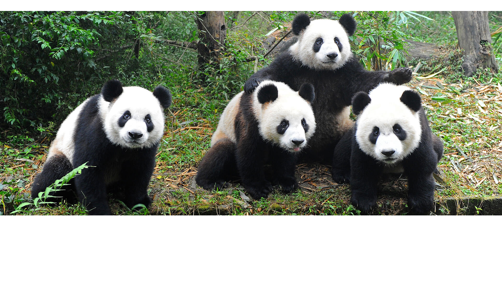

All About Pandas
 

Habitat
Do to habitat loss pandas have been dying.
Pandas have to have multiple types of bamboo to live because each type of bamboo dies out and has to regrow at different times.
They need different types so if one type dies out they can still eat another type.
Where do pandas live?
Pandas live in bamboo forests in sichuan
Facts
-

These magnificent mammals eat mostly plants. But they will occasionally eat small animals and fish, bamboo counts for 99 percent of their diet.
These guys are BIG eaters – every day they eat up to about 12 kilograms of bamboo
The giant panda’s scientific name is Ailuropoda melanoleuca, which means “black and white cat-foot”.
Pandas are sometimes known as catlike bears
Baby pandas are born pink and measure about 15cm – that’s about the size of a pencil! They are also born blind and only open their eyes six to eight weeks after birth.
Giant pandas grow to between 1.2m and 1.5m, and weigh between 75kg and 135kg. Scientists are’t sure how long
pandas live in the wild, but in captivity they live to be around 30 years old.One giant panda usually needs between 2.5 to 4 square miles (10 million m2) of land to survive.
A group of pandas is called an "embarrassment."
In ancient times, Chinese people feared pandas and described them as metal-devouring black-and-white "tapirs."
Pandas walk with their front paws turned inward.
The eyespots of a giant panda cub are initially in the shape of a circle. As the cub grows, the circles become shaped like a teardrop.
The giant panda has been on the endangered species list since 1990. The most significant threats to pandas are habitat loss and poaching. China is only approximately 5% greater than the U.S. in area but has four times the population.
Pandas have been a symbol of peace in China. For example, hundreds of years ago, warring tribes in China would raise a flag with a picture of a panda on it to stop a battle or call a truce
According to legend, the panda was once an all-white bear. When a small girl tried to save a panda cub from being attacked by a leopard, the leopard killed the girl instead. Pandas came to her funeral wearing armbands of black ashes. As they wiped their eyes, hugged each other, and covered the ears, they smudged the black ashes.
Pandas can stand upright, but their short hind legs aren’t strong enough to support their bodies. A panda’s bones are twice as heavy as the bones of other animals the same size.
Pandas do not run fast—a slow trot is as fast as they can go. The fastest bear is the black bear, which can run 35 miles per hour. That’s about as a fast as a horse or deer.
Many Chinese philosophers believe that the universe is made from two opposing forces, the Yin and Yang. The panda is one symbol of this philosophy with its contrasting black-and-white fur. The Chinese believe that the gentle nature of the panda demonstrates how the Yin and Yang bring peace and harmony when they are balanced.
Pandas rely less on visual memory than they do on spatial memory to locate a mate’s home range area and preferred patches of bamboo. Spatial memory is defined as the ability to remember a location.
Giant panda cubs are usually born in August or September and are the size of a stick of butter. A cub has pink skin, a thin coat of white fur, a long tail, and no teeth. Its eyes are closed. By the end of the first month, the baby panda has all of its spots. Its eyes open around 4-6 weeks. A baby panda is almost 2 months old before it is the size of an average human newborn baby. A baby is almost 2 years old when it leaves its mother.
Scientists are unsure why the giant panda has the markings it has. Some biologists believe the panda’s colors are camouflage of light and dark to help the panda hide in the shadows in a bamboo forest. Other scientists believe the black and white markings help the panda keep a steady temperature, or that the colors help the giant panda avoid other pandas. Still other biologists believe that the panda’s large black eyespots make their eyes look bigger and their stare more aggressive.
The gestation period for giant pandas varies from 97-163 days. This wide range is due to delayed implantation, which means that after a giant panda becomes pregnant, the cub starts to grow only if the mother panda is able to get enough food. Once the cub starts to develop, it takes about 45-60 days before it is born
A giant panda’s face is cute, but it is not chubby. It gets its shape from massive cheek muscles. In fact, a giant panda’s jaw and cheek muscles are so powerful that a panda can easily chew an aluminum dish into tiny pieces. They can also easily bite through a thick bamboo stalk. Humans have trouble cutting the same stalk with an ax